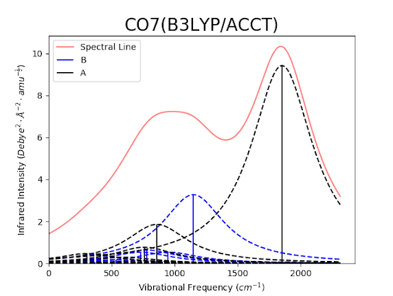
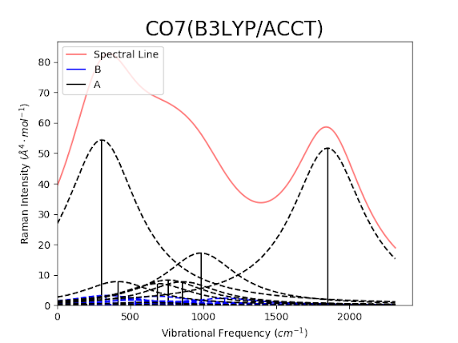

AutoGAMESS

AutoGAMESS is a Python package I developed for automating the generation of input files and parsing of log files with end goal of generating Raman data using the GAMESS(us) Quantum Chemistry software. AutoGAMESS is also able to generate line plots of vibrational frequency vs. IR/Raman intensities, some examples of these graphs are shown below. AutoGAMESS can also generate scaling factors for vibrational frequencies using the least squares method.
 